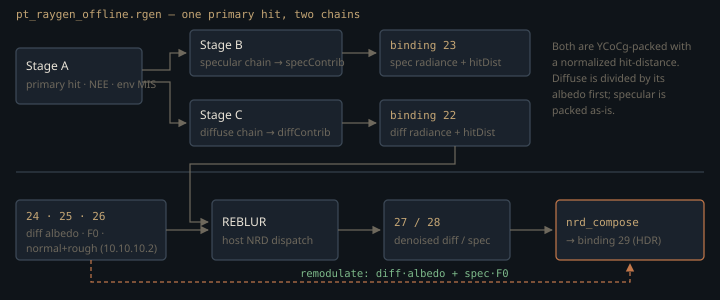

Monograph · Tree · ← Sitemap · RT program family
shaders
RT program family
pt_*, rt_shadow_*, rt_gi_*, NRD compose, SVGF, cinematic.
One raygen, one miss, one hit group
Both render profiles build their RT pipeline from the same function, `PathTracer::createRTPipeline`, and it is three shader groups either way: one general group for the raygen, one for the miss shader, one triangles hit group holding closest-hit plus — nominally — any-hit.
groups[2].anyHitShader = hasAnyHit ? 3 : VK_SHADER_UNUSED_KHR;ohao/render/rt/path_tracer_pipeline.cpp:129Every `traceRayEXT` in the family passes SBT offset 0, stride 0, miss index 0, so there is no per-material hit record and the table is three handles wide. Bouncing is a `for` loop in the raygen; closest-hit and miss never trace.
Only the raygen varies between profiles, and the one the header names by default is neither of them. `PathTracerShaderSet`'s in-class default is `pt_raygen.rgen`, but `RTProfileRendererBase::init` overwrites the whole set before `PathTracer::init` runs, and the two `IRTRendererProfile` implementations — the only two, since the base is abstract and the renderer owns exactly those two — name `pt_raygen_realtime.rgen` and `pt_raygen_offline.rgen`.
m_pathTracer.setShaderSet(m_shaderSet);ohao/render/rt/rt_profile_renderer.hpp:99`pt_raygen.rgen` still compiles and ships a `.spv`, but no runtime path binds it — it is the ancestor the two profiles were forked from, not a fallback. Everything below describes the raygens that run.
The payload is the calling convention
One raygen drives everything, so the single `rayPayloadEXT RayPayload` is the only channel between programs — reused for material fetch, emissive transport, environment radiance and shadow visibility.
Visibility is the interesting one. The path-trace pipeline has no shadow payload and no shadow miss shader. The raygen stores a positive sentinel in `payload.hitDist`, traces with terminate-on-first-hit plus skip-closest-hit, then asks whether the miss shader ran — it alone can write a negative distance.
payload.hitDist = -1.0; // signal missshaders/rt/pt_miss.rmiss:59The same invocation fills `payload.color` with environment radiance, so env-MIS gets occlusion and incident radiance from one ray instead of two. The cost is global mutable state: anything still needed after a shadow trace must be latched into a local first, or the failure is a quiet darkening, not a crash.
With no environment map bound the miss shader returns black, not a cheap constant sky ambient. The shader names the rejected alternative: in a closed room, GI rays leaking through wall seams pick that fake sky up and carry spurious light and grain back inside.
payload.color = vec3(0.0);shaders/rt/pt_miss.rmiss:72Two any-hit shaders that cannot run
`pt_anyhit.rahit` is a textbook alpha test — interpolate the UV, sample the bindless diffuse texture, drop the intersection below 0.5.
ignoreIntersectionEXT;shaders/rt/pt_anyhit.rahit:49It is compiled, linked into the hit group, and never executed. Every `traceRayEXT` site in both profile raygens — nine offline, fourteen realtime — passes `gl_RayFlagsOpaqueEXT`, and both BLAS builders in `rt_acceleration_structure.cpp` stamp `VK_GEOMETRY_OPAQUE_BIT_KHR` on the geometry; either alone suppresses any-hit. The hybrid shadow pipeline repeats it — `rt_shadow.rahit` is wired in as that hit group's any-hit, and its raygen forces opacity anyway.
uint rayFlags = gl_RayFlagsTerminateOnFirstHitEXT | gl_RayFlagsOpaqueEXT | gl_RayFlagsSkipClosestHitShaderEXT;shaders/rt/rt_shadow.rgen:65Shadows still work, via the same sentinel — `shadowPayload` starts at 0 and only the miss shader raises it.
shadowPayload = 1.0; // no occlusion = fully litshaders/rt/rt_shadow.rmiss:9The dead any-hit costs nothing, but the alpha cutout the path tracer is documented to support is inert everywhere, not only in shadow: the flag sits on the primary camera ray and on both indirect-chain bounce rays too, and the BLAS bit belongs to the geometry rather than to a ray type. A foliage or hair card is a solid quad to camera, GI and shadow rays alike.
Occlusion in both RT pipelines is signalled by the *absence* of a hit shader, not the presence of one. That is why both any-hit programs can be dead without shadows breaking — and why alpha cutout is silently dead with them.
What the closest hit decodes, and the 24-bit fuse
`pt_closesthit.rchit` resolves a triangle by adding two numbers:
uint globalTriID = gl_InstanceCustomIndexEXT + gl_PrimitiveID;shaders/rt/pt_closesthit.rchit:48That works only because the host concatenates every actor's triangles into one global index / UV / material-ID array and stores each instance's base offset in `instanceCustomIndex`.
globalTriOffset += it2->second.indexCount / 3;ohao/gpu/vulkan/rt_build.cpp:900That field is 24 bits wide in `VkAccelerationStructureInstanceKHR`, so the scheme wraps past 16,777,216 triangles — unchecked, and the symptom would be geometry sampling another mesh's material.
The RT vertex streams carry no tangent, so normal mapping builds a Frisvad basis from the shading normal alone.
float a = 1.0 / (1.0 + worldNormal.z);shaders/rt/pt_closesthit.rchit:126That frame is unrelated to the UV parameterisation, so directional detail authored against the UV layout — brushed metal, mortar bevels, stitching — is rotated by an arbitrary amount about the normal. Bump-like isotropic detail survives.
The payload's third slot is not what its name suggests: `attenuation.z` carries a curvature proxy, the summed pairwise divergence of the triangle's three vertex normals.
payload.attenuation = vec3(roughness, clamp(metallic, 0.0, 1.0), curv);shaders/rt/pt_closesthit.rchit:161Exactly one shader reads it, and it is the offline one. `pt_raygen_offline.rgen` uses curvature to widen its subsurface Gaussian where geometry is thin — lips, ears, fingertips — while flat regions keep the tight profile.
float curvature = clamp(payload.attenuation.z, 0.0, 1.0);shaders/rt/pt_raygen_offline.rgen:287float curvScale = mix(1.0, 0.3, curvature);shaders/rt/pt_raygen_offline.rgen:466`pt_raygen_realtime.rgen` has no subsurface term at all, so on the realtime profile the closest-hit computes and ships a value nobody consumes.
The `.x` / `.y` half goes through `unpackHitPbr` — the RT-local one of two byte-identical copies in the tree, which is what the quoted include resolves to. It still carries two dormant legacy branches: a negative-`.x` "binary metal" path, and a subtract-10 shift for magnitudes at or above 10. Current closest-hit writes a positive roughness already floored at 0.04, so neither can fire.
if (att.x < 0.0 && att.y < 1e-4) {shaders/rt/includes/pbr_unpack.glsl:9The realtime raygen re-implements the same unpack inline for its secondary reservoir vertex, dormant branch included, instead of calling the helper:
if (sRough >= 10.0) sRough -= 10.0;shaders/rt/pt_raygen_realtime.rgen:1397One buffer, four declarations
Binding 11 is declared four times across `shaders/rt/`, with two different shapes. All three raygens see a light count followed by the `GPULight` array; the miss shader sees a four-word header whose second and third words are the environment map's bindless index and intensity.
uint envMapTexIdx; // bindless index of HDR env map (0xFFFFFFFF = none)shaders/rt/pt_miss.rmiss:28std430 puts the vec4-based array at offset 16 regardless, so those three spare header words are free real estate — and a hand-maintained union across four shader declarations and the C++ file that fills them, with nothing enforcing agreement.
VkDeviceSize lightDataOffset = 16; // align GPULight array to 16 bytesohao/gpu/vulkan/light_upload.cpp:257Splitting one path in two so a denoiser can see it
From the primary hit `pt_raygen_offline.rgen` does not stochastically choose a lobe. It fires two independent chains — a roughness-jittered mirror direction and a cosine hemisphere sample — attributing everything each collects to `specContrib` or `diffContrib`.
vec3 jitVec = cosineHemisphere(reflected, jitU) * roughness;shaders/rt/pt_raygen_offline.rgen:587The diffuse chain's bounce-0 throughput is exact: for a Lambertian lobe under cosine sampling, f·cosθ/pdf collapses to `albedo`. The specular chain's is not — it is a constant, which the line's own comment calls simplified:
specThroughput = mix(vec3(1.0), albedo, metallic);shaders/rt/pt_raygen_offline.rgen:597The comment above it argues a deterministic pair needs no selection correction. True of the *selection*; it does not restore the lobe weight, so a dielectric launches a unit-weight specular chain and an albedo-weight diffuse chain from the same hit. From bounce 2 on both chains sample one lobe and divide by its probability — the approximation is bounce-0 only.
`pt_raygen_realtime.rgen` replaced exactly this half. Its bounce-0 specular direction is a GGX VNDF sample, whose estimator weight is the Fresnel term times the height-correlated Smith ratio — the real f·cosθ/pdf, not a constant:
specThroughput = F * smithG2overG1GGX(NdotV, NdotL, alpha);shaders/rt/pt_raygen_realtime.rgen:792The offline file's two loops read as copies but are not. A specular bounce inside the specular chain scales throughput by `mix(1, albedo, metallic)`; the same event inside the diffuse chain scales by `albedo * (1 - metallic)` — zero for a pure metal, which kills that chain outright.
specThroughput *= mix(vec3(1.0), bAlbedo, bMetallic);shaders/rt/pt_raygen_offline.rgen:864diffThroughput *= bAlbedo * (1.0 - bMetallic);shaders/rt/pt_raygen_offline.rgen:1172Hit distances follow REBLUR's conventions, not aesthetics: the specular one accumulates along the chain until a diffuse bounce breaks it, the diffuse one latches the first secondary hit only.
if (payload.hitDist >= 0.0 && specChainActive) {shaders/rt/pt_raygen_offline.rgen:622
The packing that keeps a sign bit alive
Binding 26 is `R10G10B10A2_UNORM`, NRD's `IN_NORMAL_ROUGHNESS` layout, and the profile raygens port NRD's encoder verbatim: rotated octahedral normal in x and y, roughness in z, and the normal's z-sign smuggled into the *sign of the roughness*. Zero roughness has no sign, so the encoder floors it at 1.5/512 ≈ 0.0029 first:
roughness = max(roughness, 1.5 / 512.0);shaders/rt/pt_raygen_offline.rgen:121In this engine that floor can never bind. Closest-hit already clamps roughness to 0.04 before writing the payload and `unpackHitPbr` clamps again at 0.01, so what reaches the encoder is more than ten times the floor. The line is inherited and correct, but not load-bearing: nothing here can reach it.
roughness = max(roughness, 0.04);shaders/rt/pt_closesthit.rchit:148The remaining two bits carry NRD's material ID, left at slot 0.
Where the demodulation round trip closes
`nrd_compose.comp` is thirty-five lines and one line of arithmetic, applied after unpacking REBLUR's YCoCg output back to linear:
vec3 composed = diffRad * diffAlbedo + specRad * specColor;shaders/rt/nrd_compose.comp:32That multiply is the second half of a round trip whose first half — dividing radiance by the albedo AOV before packing — lives in the profile raygens:
vec3 diffDemod = diffContrib / max(firstHitDiffAlbedo, vec3(0.03));shaders/rt/pt_raygen_offline.rgen:1346Only the diffuse channel is divided. Specular is packed raw, and that asymmetry is deliberate: the specular chain's bounce-0 throughput already folded a metal's albedo in, so the factor compose reads is `mix(F0, 1, metallic)` — unity for a metal, making the remodulate a no-op there, and F0 for a dielectric, whose chain started at unit weight. Each surface class gets exactly one application.
firstHitSpecColor = mix(F0, vec3(1.0), metallic);shaders/rt/pt_raygen_offline.rgen:295Both radiance AOVs are written through `AOV_ACCUMULATE_WRITE`, which under the accumulate-AOVs flag folds each sample into a `1/(n+1)` running mean, so an N-spp render hands the denoiser its average rather than its last sample:
_ohaoAovCur = mix(_ohaoAovPrev, _ohaoAovCur, 1.0 / _ohaoAovN); \shaders/rt/pt_raygen_offline.rgen:74The hybrid pair, and what it is not
`rt_shadow.rgen` and `rt_gi.rgen` are a different family — they read the deferred GBuffer instead of tracing primary rays. Both are on by default. The `{false}` member initializers in `deferred_renderer.hpp` are only the pre-init value; `DeferredRenderer::init` flips each flag to `true` as soon as the corresponding technique's own `init()` succeeds, and the CSM / no-GI fallback branches run only when RT initialisation fails.
m_useRTShadows = true;ohao/render/deferred/deferred_renderer.cpp:143Each takes a single light through push constants; neither binds the light SSBO, so they handle one source per dispatch. The GI pass traces one cosine-weighted bounce, never fires a shadow ray from the secondary hit, uses a non-physical `1/(1+d²)` falloff, and approximates the hit surface's normal as the negated ray direction — a colour-bleed approximation, not a GI solver.
float hitNdotL = max(dot(normalize(toLightFromHit), -dir), 0.0);shaders/rt/rt_gi.rgen:116Both lean on the same absent-hit signal as the path tracer, and each has the miss shader the path tracer does without: `rt_shadow.rmiss` raises the shadow payload to fully lit, `rt_gi.rmiss` writes −1 into alpha as the miss marker the raygen tests before accumulating.
giPayload = vec4(0.0, 0.0, 0.0, -1.0); // miss markershaders/rt/rt_gi.rmiss:8The shadow pass's jitter hash has no frame term, so its penumbra noise is frozen per pixel and never resolves:
float r1 = hash(vec2(pixel) + vec2(float(s) * 7.13, float(s) * 13.37));shaders/rt/rt_shadow.rgen:69Both trace with ray mask `0x01` under comments claiming static-only visibility. That filter is inert — every TLAS instance is tagged `MASK_STATIC_ONLY`, which is 0xFF — so the GI closest-hit works around it in the payload, keying "static" off a flag smuggled into the material's alpha channel.
constexpr uint32_t MASK_STATIC_ONLY = 0xFF; // static geometry — visible to everythingohao/render/rt/rt_visibility.hpp:15float isStatic = materialBuf.materials[gl_InstanceID].a;shaders/rt/rt_gi.rchit:21The rest of shaders/rt, and which of it runs
Twenty files sit in `shaders/rt/`. Past the two pipelines above, four `cinematic_*.comp` passes run after NRD compose — bright-pass extract, a 13-tap downsampling blur that builds the bloom mip chain, a gather-based DoF, and the composite that applies AgX and writes binding 30 — each built and dispatched through `nrd_cinematic.cpp`.
Two à-trous kernels remain, and the plain one is the one that never runs. `rt_atrous.comp` is a 5×5 B3-spline à-trous over the LDR beauty whose per-tap weight multiplies three edge-stopping terms in source order: colour similarity first, then normal, then linear depth. Colour similarity is the term doing most of the work — it is what averages away Monte Carlo noise; the normal and depth guides only stop the kernel crossing geometric edges.
w *= exp(-colorDist / (pc.sigmaColor * pc.sigmaColor + 1e-4));shaders/rt/rt_atrous.comp:59Nothing loads it. `AtrousDenoiser` builds its two pipelines from `rt_svgf_temporal.comp` and `rt_svgf_atrous.comp` instead — the variance-guided pair, which is what `DenoiseMode::Atrous` actually dispatches — and the `RTDenoiser` class that would have driven the plain kernel is a header in `ohao/render/rt/denoiser.hpp` with no translation unit.
if (!I.createComputePipeline("rt_rt_svgf_atrous.comp.spv", I.atrousPipelineLayout, I.atrousPipeline))ohao/render/rt/denoise/atrous_denoise.cpp:277Contracts
- Latch any payload field you still need before tracing a shadow ray: the miss shader overwrites `color`, `hitDist` and `envPdf` on every ray, visibility rays included.
- Binding 11's header sits at fixed byte offsets 0 / 4 / 8 with `GPULight[]` at 16, declared in four shaders and written in one C++ file. Change it in one place and the miss shader reads a light's position as an env-map index.
- TLAS instances must be added in the order the global index / UV / material-ID arrays are concatenated: `instanceCustomIndex` *is* the triangle base offset, capped at 2²⁴.
- Alpha-tested geometry is opaque to camera, GI and shadow rays alike — suppressed by `gl_RayFlagsOpaqueEXT` at every call site *and* by `VK_GEOMETRY_OPAQUE_BIT_KHR` in the BLAS. Removing one does not revive it.
- Bindings 24/25 are demodulation factors matched to what the raygen already did — diffuse pre-divided, specular not. Demodulate the specular channel without changing `firstHitSpecColor`, or vice versa, and metals double-darken while dielectrics lose their Fresnel.
Source files
ohao/render/rt/path_tracer_pipeline.cppohao/render/rt/rt_profile_renderer.hppshaders/rt/pt_miss.rmissshaders/rt/pt_anyhit.rahitshaders/rt/rt_shadow.rgenshaders/rt/rt_shadow.rmissshaders/rt/pt_closesthit.rchitohao/gpu/vulkan/rt_build.cppshaders/rt/pt_raygen_offline.rgenshaders/rt/includes/pbr_unpack.glslshaders/rt/pt_raygen_realtime.rgenohao/gpu/vulkan/light_upload.cppshaders/rt/nrd_compose.compohao/render/deferred/deferred_renderer.cppshaders/rt/rt_gi.rgenshaders/rt/rt_gi.rmissohao/render/rt/rt_visibility.hppshaders/rt/rt_gi.rchitshaders/rt/rt_atrous.compohao/render/rt/denoise/atrous_denoise.cppshaders/rt/pt_raygen.rgenshaders/rt/rt_shadow.rahitshaders/rt/rt_svgf_temporal.compshaders/rt/rt_svgf_atrous.compshaders/rt/cinematic_bloom_extract.compshaders/rt/cinematic_bloom_blur.compshaders/rt/cinematic_dof.compshaders/rt/cinematic_composite.compParent hub for the full pipeline narrative; this page is the file-level design unit. Sitemap · hover glossary terms anywhere.